מה עושים ביחידה
- ממשיכים את תיק ההטמעה: לכל אחת משלוש הפעולות שכתבתם ביחידה 3, כותבים מה כבר עשיתם, מה תעשו עכשיו, ומתי.
- בונים הדרכה לצוות בשלושה כלים: מתכננים אותה ב-Gemini Canvas, מכינים סרטון ב-Vids, ובונים פעילות לצוות ב-Canvas או ב-AI Studio.
- קובעים מתי מעבירים את ההדרכה.
הגשה . כל מה שכותבים נשמר לבד. עדיף לעבוד מהמחשב.
מה שכתבתם ביחידה 3 כבר כאן. משלימים רק מה שחסר.
נתקעתם? הכפתור "נתקעתי" בתחתית המסך שולח לנו הודעה, ונעזור לכם מרחוק.
המצגות וההסברים ממפגש 4:
מצגת מפגש 4 הדף המלווה של מפגש 4, צעד אחר צעד המצגת לחדר המוריםתיק ההטמעה
הצורך שלנו
זה הצורך שבחרתם ביחידה 3. אפשר לדייק אותו.
ההדרכה לצוות · לפני הכול
נכנסים עם החשבון של משרד החינוך
בדף הכניסה של משרד החינוך לסביבת גוגל בוחרים משרד העבודה, ונכנסים עם החשבון. שם כל הכלים של היחידה, בחינם.
כניסה לחשבוןצעד אחר צעד, עם תמונות
1. בוחרים "משרד העבודה":

2. לוחצים על 9 הנקודות למעלה. שם Gemini ו-Vids:
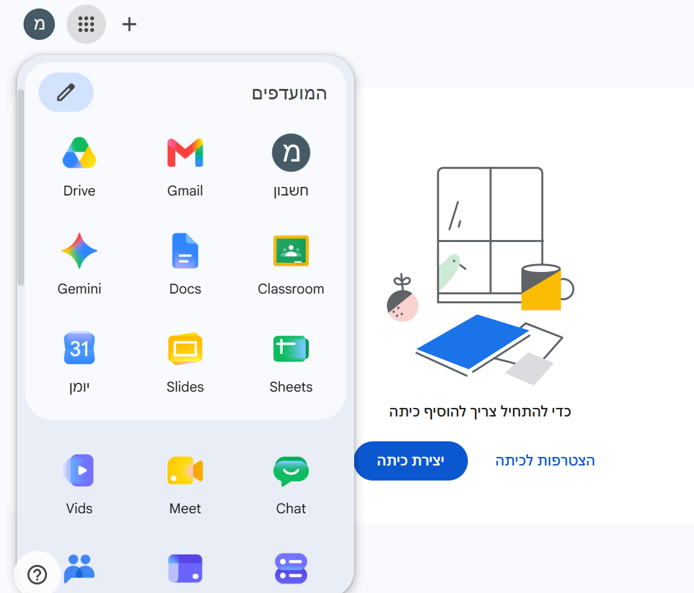
נפתח החשבון הפרטי? לוחצים על התמונה בפינה, ובוחרים את החשבון של משרד החינוך.
ההדרכה לצוות · כלי 1 מתוך 3
מתכננים את ההדרכה ב-Gemini Canvas
הדרכה של 15 דקות לצוות, שמתחברת לצורך. Canvas כותב תוכנית שאפשר לערוך ולשתף.
צעד אחר צעד, עם תמונות
1. בתיבת הכתיבה: + ← כלים נוספים ← Canvas.
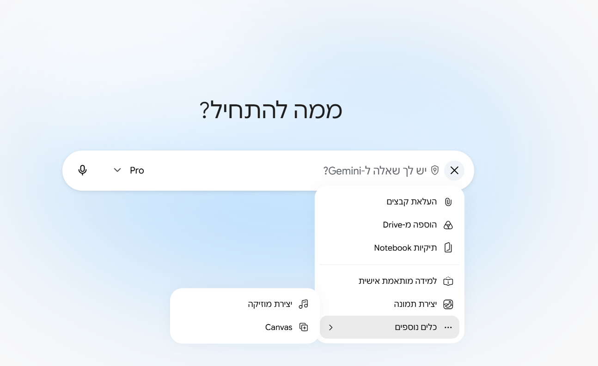
2. מדביקים את הבקשה ושולחים. Gemini ישאל 3 שאלות על הצוות. עונים, והתוכנית נפתחת ליד השיחה.
3. משנים בשיחה מה שצריך, למשל: "קצר את ההדגמה ל-3 דקות".
4. מעל התוכנית: שיתוף ← מעתיקים את הקישור. אפשר גם ייצוא ל-Google Docs, ולשתף את המסמך.
קיבלתם רק טקסט רגיל בשיחה? Canvas לא היה מסומן. מסמנים, ושולחים שוב.
ההדרכה לצוות · כלי 2 מתוך 3
מכינים סרטון ב-Vids, כחלק מההדרכה
סרטון קצר שפותח את ההדרכה או מדגים בה משהו. התוכנית מ-Canvas כבר כוללת 3 סצנות: מדביקים אותן ב-Vids אחת אחרי השנייה.
צעד אחר צעד, עם תמונות
1. לוחצים יצירת סרטונים:
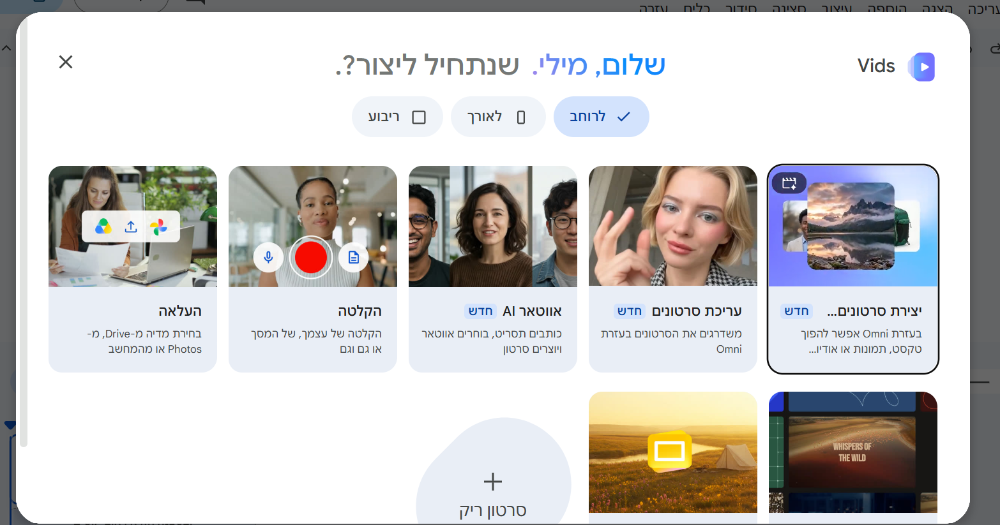
2. מדביקים סצנה בתיבה שמתחת ל"יצירה": מי, איפה, מה קורה, ואיך המצלמה זזה. בלי טקסט בתוך הסרטון.
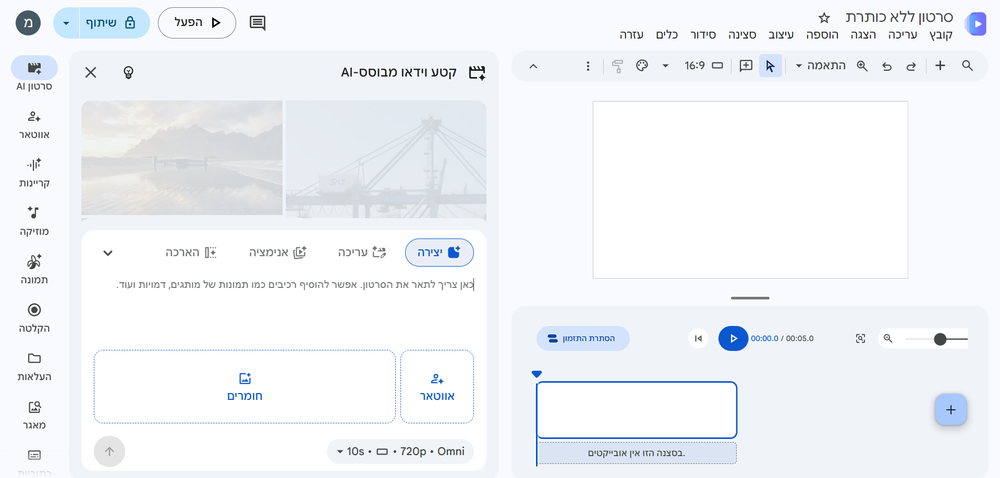
3. כשהקטע מוכן, לוחצים הוספה. בלי הלחיצה הזו הסרטון נמחק כשסוגרים את הכרטיסייה.
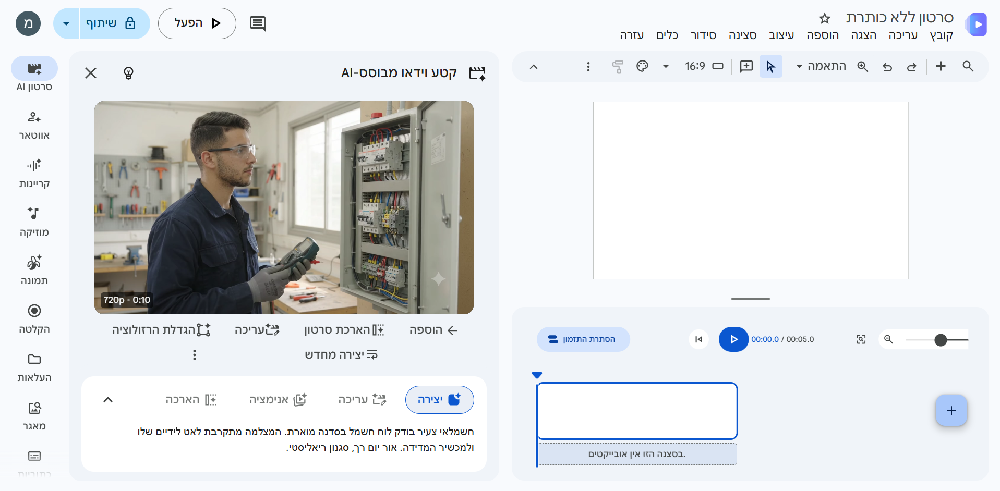
4. סצנה נוספת: ה-+ הכחול ליד ציר הזמן, ושוב "הוספה".

5. כתוביות: בסרגל הצד, כתוביות.
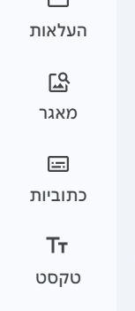
6. למעלה: שיתוף ← מעתיקים את הקישור. להקרנה בלי אינטרנט: קובץ ← הורדה ← סרטון MP4.
ההדרכה לצוות · כלי 3 מתוך 3
בונים פעילות למורים, שעושים אותה בהדרכה
בוחרים אחד:
צעד אחר צעד, עם תמונות
1. שיחה חדשה, Canvas מסומן (+ ← כלים נוספים ← Canvas). מדביקים ושולחים. אחרי כחצי דקה הפעילות נפתחת:
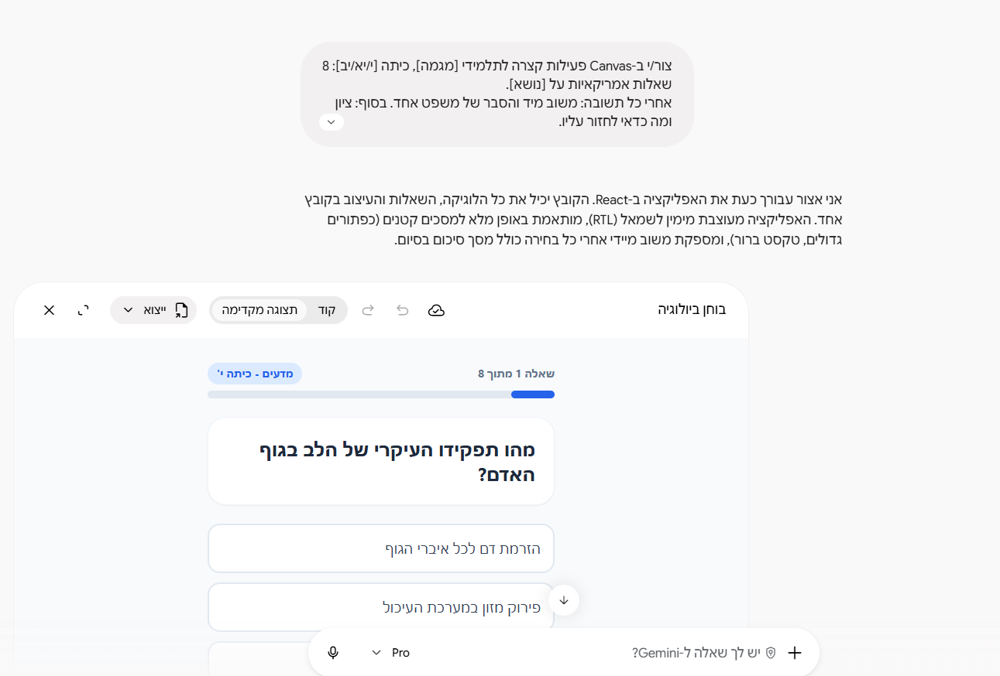
2. משנים בשיחה, למשל: "הגדל את הכפתורים".
3. מעל הפעילות: ייצוא ← Google Sites:
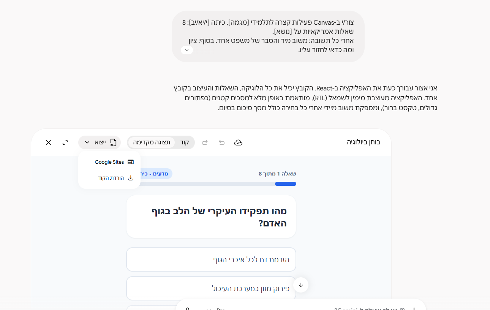
4. בהודעה שמופיעה: פתיחת האתר.
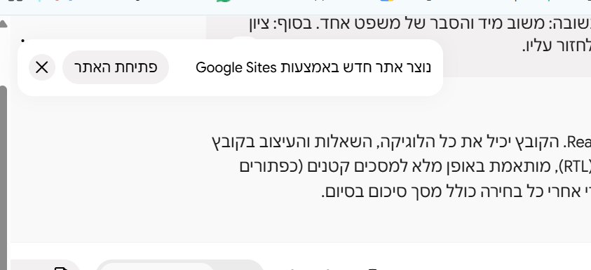
5. באתר: פרסום למעלה, כותבים שם לאתר, ושוב פרסום. את האתר רואים כל המשתמשים בדומיין של משרד החינוך.
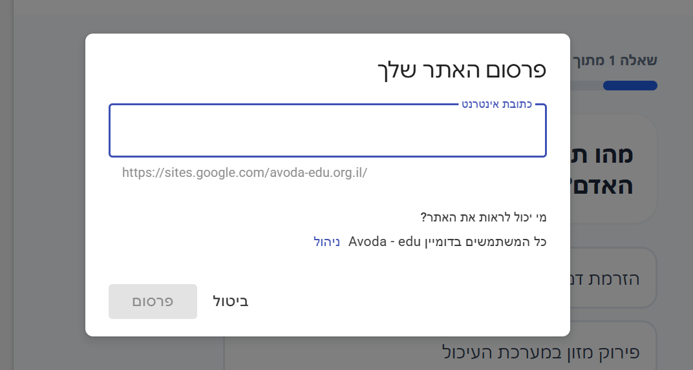
6. מעתיקים את כתובת האתר.
צעד אחר צעד, עם תמונות
1. aistudio.google.com ← בתפריט משמאל, תחת BUILD: New app. הממשק באנגלית: קליק ימני ← "תרגום לעברית". מכבים את התרגום לפני שכותבים.
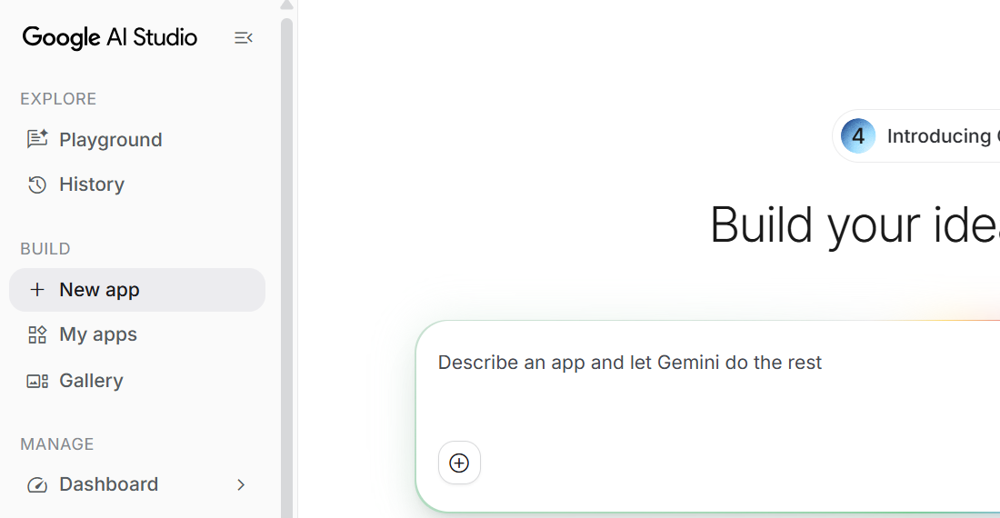
2. ליד תיבת הכתיבה: Default mode ← PLAN. מדביקים ושולחים.
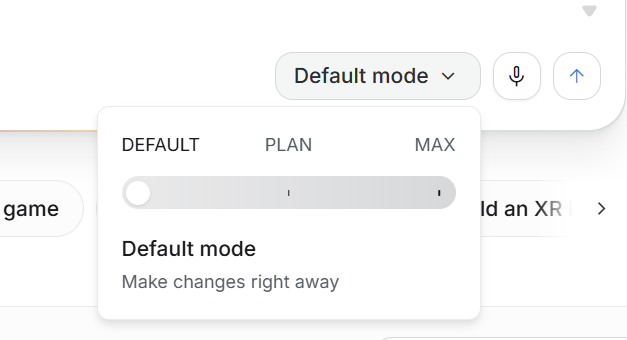
3. עונים לשאלות, ומאשרים את התוכנית. הבנייה לוקחת כ-2 דקות. התצוגה ריקה? כותבים בשיחה "Fix any build issues".
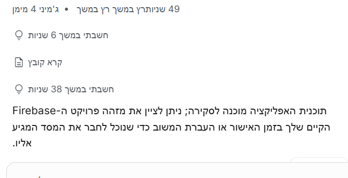
4. משתפים: Share ← מחליפים Restricted ל-Public ← מעתיקים את הקישור. לא Publish, כי הוא מבקש תשלום.
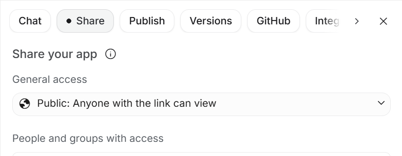
מי שפותח את הקישור נכנס עם חשבון גוגל, ורואה אזהרה על "מפתח אחר". לוחצים Continue.
ההדרכה לצוות
מתי מעבירים את ההדרכה?
קובעים עכשיו מועד. את ההדרכה עצמה מעבירים במועד שקבעתם.
מה מכינים: התוכנית מ-Canvas, הסרטון (גם כ-MP4, למקרה שאין אינטרנט), והקישור לפעילות על המסך או בקוד QR.
בודקים ומגישים
לפני שמגישים: לא מזינים שמות או פרטים מזהים של תלמידים ומורים, ובודקים כל תוצר לפני שהוא מגיע לצוות.
משוב
תודה! אפשר לחזור לכל שלב ולעדכן עד מועד ההגשה.